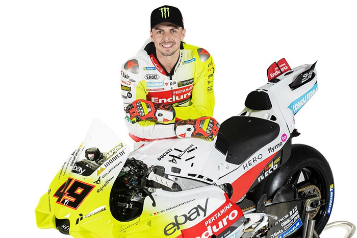

Desde 2015 participa en el Campeonato del Mundo de Motociclismo, siendo el subcampeonato de Moto3 en 2018 su mejor resultado. Desde 2022 compitió en la categoría de MotoGP con el equipo Gresini Racing,
obteniendo su primera victoria en el Gran Premio de Catar de 2023. En 2024 compite con el Pertamina Enduro VR46 Racing Team.
Es originario del distrito EUR de Roma. En 2009, fue campeón europeo de minimoto junior, en 2010 ganó el Trofeo Honda HIRP 100cc, mientras que en 2012 ganó el título italiano PreGP 250cc.
En 2015 fue segundo en la categoría Moto3 del Campeonato Italiano de Velocidad, gracias a dos victorias. En el mismo año participó en la Red Bull Rookies Cup, consiguiendo tres victorias y el segundo
lugar en la clasificación final. Fuente: Wikipedia.

Fecha de nacimiento: 10 de octubre de 1998
Lugar de nacimiento: Roma, Italia
Altura: 1,68 metros
Peso: 62 kg
Moto: Ducati Desmosedici GP
Dorsal: 49
Gresini Racing Moto3
Del Conca Gresini Moto2
Speed Up Racing
Federal Oil Gresini Moto2
Gresini Racing MotoGP
Pertamina Enduro VR46 Racing Team
Chicane
Serie de curvas pronunciadas cuyo fin es reducir la velocidad.
Pole
La primera posición en la parrilla de salida de una carrera.
Tacógrafo
Dispositivo para registrar automáticamente datos como la velocidad, distancia, los tiempos de conducción...
Control de tracción
Sistema electrónico de seguridad que utiliza sensores para monitorear la velocidad de las ruedas y evitar que la rueda trasera pierda agarre y patine durante la aceleración.
Gran premio
Evento de competición de motociclismo de velocidad que se celebra a lo largo de un fin de semana.